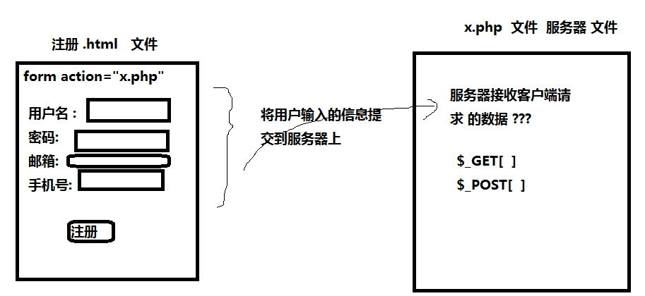

1、php 语法 （三大结构 函数 数组）
服务器语言 ： 必须在apache服务器下执行 【注】：php是服务器语言，服务器语言语法要求都很严格，每句话结束以后必须写分号
端口 ： http 协议 默认端口号是 80 端口号可以更改
http://127.0.0.1/php/me.php?__hbt=1521451166245
【注】：127.0.0.1服务器 端口号默认80，可写可不写 后边的是路径
php输出 ：
echo 没有返回值 可以输出多个字符串 【注】：常用，因为没有返回值速度更快
print 有返回值 是1 只能输出1一个字符串
变量定义 ：
所有的变量前必须加一个 $ 不管是定义还是使用，必须加$
$id $name $arr
注意 ： 字符串和变量拼接使用 .
header("content-type:text/html;charset=utf-8");//识别中文字符
$name="ck";
//echo $name;//php中所有变量前都需要加$，不论是定义还是使用都需要加
echo "我的名字是".$name,"<br>";//echo可以一次性输出多个字符串，字符串之间用逗号连接
echo "我的名字是$name","<br>";//双引号可以自动解析变量，不用再使用 . 拼接
print "我的名字是".$name;//php中拼接是用 .
//print "我的名字是$name","<br>";//错误，print也是输出，但一次只能输出一个字符串
三大结构： 【注】：和js语法一样，但是没有结构赋值
顺序
选择
循环
函数和数组 【注】：数组分为两种 数组不能用echo和print输出，只能能print_r输出
1、索引数组：下标是阿拉伯数字，可以用for循环遍历，也可以用foreach遍历值
2、关联数组，内容是键值对，用得更多，操作ajax，可以转换成json对象
var arr = array( "sname"=>"小明","age"=>18 );
通过 json_encode( php数组 ) 将数组转成json对象
$arr = Array(1,2,3,4);//索引数组
//echo $arr;//数组只能用print_r输出
print_r($arr);
echo "<br>";
echo count($arr);//数组的长度
for( $i = 0; $i < count($arr); $i++ ){//当数组为索引数组的时候可以用for遍历
echo $arr[$i],"<br>";
}
foreach( $arr as $i ){//也可以用foreach遍历值
echo $i."<br>";
}
$arr2 = Array("sname"=>"chenkang","age"=>99);//关联数组不能用for遍历
foreach( $arr2 as $i ){//关联数组用foreach遍历，用的较多，可以转换成json对象
echo $i."<br>";
}
2、php如何接受客户端请求的数据 （客户端和服务器端的交互）
如果form标签中的method值为 get ，服务器通过 $_GET[name名称]接收
method值为post ， 服务器通过$_POST[name名称]接收

3、php如何生成动态网页（明白php生成动态网页原理）
php生成动态页面原理图:

4、php数组如何生成json
$arr = array( "sname"=>"小明","age"=>18 ); 【注】：数据在传输过程中都是string格式
通过 json_encode( php数组 ) 将数组转成json对象
<?php
header("content-type:text/html;charset=utf-8");
$arr = Array(
Array("uname"=>"xiaoming","age"=>18),
Array("uname"=>"xiaoming1","age"=>118),
Array("uname"=>"xiaoming2","age"=>218)
);
$res = json_encode($arr);////将数组转成json对象
echo $res;//[{"uname":"xiaoming","age":18},{"uname":"xiaoming1","age":118},{"uname":"xiaoming2","age":218}]
?>
<script>
var str = '<?php echo $res;?>';//只能使用单引号接收php服务器传过来的数据，并且服务器传回来的数据默认都是字符串
//var str = "<?php echo $res;?>";//Uncaught SyntaxError: Unexpected identifier
console.log(str);//[{"uname":"xiaoming","age":18},{"uname":"xiaoming1","age":118},{"uname":"xiaoming2","age":218}]
var arr = JSON.parse(str);
console.log(arr);
var str1 = "";
for( var i = 0; i < arr.length; i++ ){
str1 += `<li>我叫${arr[i].uname},我${arr[i].age}岁了</li>`;
}
document.getElementById("box").innerHTML = str1;
</script>
5、xss攻击
什么是xss? --- 跨站脚本攻击 cross site scripting 为了不和层叠样式表混淆 ，改名 xss
当用户向表单中输入一些具有特定含义的字符时，这些数据可以被服务器解析
如何避免脚本攻击：
1、方案一 ： 客户端使用正则（弊端 ： 行内人会将html代码通过其他文件编译，仍然能实现脚本攻击）
2、方案二 : 服务器解决脚本攻击 （解决办法 ： 将客户端传递的数据通过某种方法 过滤 去掉标签）

<?php
header("content-type:text/html;charset=utf-8");
$uname = $_POST["uname"];
echo strip_tags($uname);// 去掉字符串中的标签符号
?>
6、mysql
数据库 ： 一个文件 一个文件夹 一个U盘 硬盘 ... 都是数据库 存放数据的一个仓库
数据库语言 ： mysql sqlserver oracle db2 access.....
数据库中存放的数据 都是被 结构化 的数据
什么是结构化的数据 ：
大家好，我叫梅恒辉，我是一个性格开朗乐观的人，我毕业于清华大学，学习专业是前端开发，我目前没有女朋友，很高兴和大家成为朋友.
结构化的数据:
姓名 性别 毕业学校 专业 现住址
梅恒辉 男 清华 计算机 北京
数据库中的数据都是存在表中。
表是由行 列组成，列标题 叫做 字段
存储数据过程：
先有一个数据库----在数据库中创建表
数据库代码 不区分大小写
创建数据库
create database 数据库名称
创建表：
create table 表名
(
字段名 类型,
字段名 类型,
....
)
创建产品表
create table pro
（
pid int primary key auto_increment, primary:主要的 increment：增加，增长
pname char(20),
price int
）
主键 ： primary key 特点 ： 数据不可以重复 同时 主键数据不能为空 一般一张表中 会存在一个id号，这个id字段就作为主键
一般一张表的主键 建议设置为 自增 （1,2,3,4,5...） 好处 ： 该子段的数据有系统自动赋值
对表数据的操作：
增--向表中添加一条数据：
insert into 表名(字段1,字段2,...) values(值1，值2,...) insert:插入，增加
删 （一般条件是id） delete:删除
delete from 表名 清空表数据（慎重使用）
delete from 表名 where 字段=值
删除编号为3的产品
delete from pro where pid = 3
删除 小米 手机这个产品
delete from pro where pname = "小米"
改 （一般条件是id）
update 表名 set 字段 = 值 , 字段 = 值 ,.. where 条件 update:更新，修改
修改 小米手机价格是 3000
update product set price = 3000 where pname = "小米"
mysql多个条件 and 表示 并且 or 表示 或者
删除 编号为 3 并且 商品名称 是红米的 商品
delete from pro where pid=3 and pname="红米"
查
select * from 表名 查询所有数据 select:查询
select pname,price from 表名 查询指定的列
select * from 表名 where 条件 按照条件查询
查询编号为7的商品
select * from pro where pid = 7